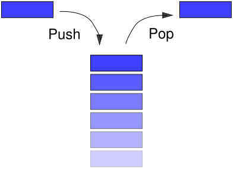

|
A stack is a collection of objects that are inserted and removed
according to the last-in first-out
(LIFO) principle. Objects can be inserted into a stack at any
time, but only the most recently inserted object can be removed at any time.
Basically, a stack is a data structure of ordered items such that items can be
inserted and removed only at one end (called the top). When we say the
items are ordered, we mean the order we can access them.

Stacks are the simplest of all data structures, yet they are
also among the most important, as they are used in a host of different
applications that include many more sophisticated data structures. We will go
over three applications of stacks. These examples are central to many activities
that a computer must do: expression evaluation, backtracking
(game playing, finding paths, exhaustive searching), and memory management.
First of all, let's look at the stack ADT.
/**
* Interface for a stack: a collection of objects that are inserted
* and removed according to the last-in first-out principle. This
* interface includes the main methods of java.util.Stack.
*
* @author Roberto Tamassia
* @author Michael Goodrich
*/
public interface Stack<E> {
/**
* Return the number of elements in the stack.
* @return number of elements in the stack.
*/
public int size();
/**
* Return whether the stack is empty.
* @return true if the stack is empty, false otherwise.
*/
public boolean isEmpty();
/**
* Inspect the element at the top of the stack.
* @return top element in the stack.
*/
public E top();
/**
* Insert an element at the top of the stack.
* @param element to be inserted.
*/
public void push (E element);
/**
* Remove the top element from the stack.
* @return element removed.
*/
public E pop();
}
|
/**
* Implementation of the stack ADT using a fixed-length array.
*/
public class ArrayStack<E> implements Stack<E> {
protected int capacity;
// The actual capacity of the stack array
public static final int CAPACITY = 1000; // default array capacity
protected E S[]; // Generic array used to implement the stack
protected int top = -1; // index for the top of the stack
public ArrayStack() {
this(CAPACITY); // default capacity
}
public ArrayStack(int cap) {
capacity = cap;
S = (E[]) new Object[capacity]; // compiler may give warning, but this is ok
}
public int size() {
return (top + 1);
}
public boolean isEmpty() {
return (top < 0);
}
public void push(E element) {
if (size() == capacity)
{
System.out.println("Stack is full.");
return;
}
S[++top] = element;
}
public E top() {
if (isEmpty())
{
System.out.println("Stack is empty.");
return null;
}
return S[top];
}
public E pop() {
E element;
if (isEmpty())
{
System.out.println("Stack is empty.");
return null;
}
element = S[top];
S[top--] = null; // dereference S[top] for garbage collection.
return element;
}
public String toString() {
String s;
s = "[";
if (size() > 0) s+= S[0];
if (size() > 1)
for (int i = 1; i <= size()-1; i++) {
s += ", " + S[i];
}
return s + "]";
}
// Prints status information about a recent operation and the stack.
public void status(String op, Object element) {
System.out.print("------> "
+ op); // print this operation
System.out.println(", returns " + element); // what was returned
System.out.print("result: size = " + size() + ", isEmpty = " + isEmpty());
System.out.println(", stack: " + this); // contents of the stack
}
/**
* Test our program by performing a series of operations on stacks,
* printing the operations performed, the returned elements and the
* contents of the stack involved, after each operation.
*/
public static void main(String[] args) {
Object o;
ArrayStack<Integer> A = new ArrayStack<Integer>();
A.status("new ArrayStack<Integer> A", null);
A.push(7);
A.status("A.push(7)", null);
o = A.pop();
A.status("A.pop()", o);
A.push(9);
A.status("A.push(9)", null);
o = A.pop();
A.status("A.pop()", o);
ArrayStack<String> B = new ArrayStack<String>();
B.status("new ArrayStack<String> B", null);
B.push("Bob");
B.status("B.push(\"Bob\")", null);
B.push("Alice");
B.status("B.push(\"Alice\")", null);
o = B.pop();
B.status("B.pop()", o);
B.push("Eve");
B.status("B.push(\"Eve\")", null);
}
}
|
|
Stacks are widely used in computer programming, particularly in
the following three applications: Let's practice using stack on a simple example: reverse an array
using stack. Matching Parentheses Arithmetic expressions can contain various pairs of grouping
symbols, such as:
-
Parentheses: ( and ) -
Braces: { and } -
Brackets: [ and ] -
Floor function symbols -
Ceiling function symbols Each opening symbol must match with its corresponding closing
symbol. For example, look at the following expression: [(x + 8) *
(9-2)]. Algorithm ParenMatch(X, n):
Input: An array X of n tokens, each of which is either a
grouping symbol, a variable, an arithmetic operator, or a number
Output: true iff. all the grouping symbols in X match
Let S be an empty stack
for i = 0
to
n-1 do
if
X[i] is an opening grouping symbol then
S.push(X[i])
else if X[i] is a closing grouping symbol then
if S.isEmpty() then
return false {nothing to match with}
if S.pop() does not match the type of X[i] then
return false {wrong type}
if S.isEmpty() then
return true {every symbol matched}
else return false {some symbols were never
matched} Matching HTML Tags HTML is the standard format for hyperlinked documents on the
Internet. In an HTML document, portions of text are delimited by HTML tags.
import java.io.*;
import java.util.Scanner;
/** Simplified test of matching tags in an HTML document. */
public class HTML {
/** Strip the first and last characters off a <tag> string. */
public static String stripEnds(String t) {
if (t.length() <= 2) return null; // this is a degenerate tag
return t.substring(1,t.length()-1);
}
/** Test if a stripped tag string is empty or a true opening tag. */
public static boolean isOpeningTag(String tag) {
return (tag.length() == 0) || (tag.charAt(0) != '/');
}
/** Test if stripped tag1 matches closing tag2 (first character is '/'). */
public static boolean areMatchingTags(String tag1, String tag2) {
return tag1.equals(tag2.substring(1)); // test against name after '/'
}
/** Test if every opening tag has a matching closing tag. */
public static boolean isHTMLMatched(String[] tag) {
NodeStack<String> S = new NodeStack<String>(); // Stack for matching tags
for (int i = 0; (i < tag.length) && (tag[i] != null); i++) {
if (isOpeningTag(tag[i]))
S.push(tag[i]); // opening tag; push it on the stack
else {
if (S.isEmpty())
return false; // nothing to match
if (!areMatchingTags(S.pop(), tag[i]))
return false; // wrong match
}
}
if (S.isEmpty()) return true; // we matched everything
return false; // we have some tags that never were matched
}
public final static int CAPACITY = 1000; // Tag array size
/* Parse an HTML document into an array of html tags */
public static String[] parseHTML(Scanner s) {
String[] tag = new String[CAPACITY]; // our tag array (initially all null)
int count = 0; // tag counter
String token; // token returned by the scanner s
while (s.hasNextLine()) {
while ((token = s.findInLine("<[^>]*>")) != null) // find the next tag
tag[count++] = stripEnds(token); // strip the ends off this tag
s.nextLine(); // go to the next line
}
return tag; // our array of (stripped) tags
}
public static void main(String[] args) throws IOException { // tester
if (isHTMLMatched(parseHTML(new Scanner(System.in))))
System.out.println("The input file is a matched HTML document.");
else
System.out.println("The input file is not a matched HTML document.");
}
}
The method parseHTML uses a Scanner s to extract the tags from
the HTML document, using the pattern "<[^>]*>", which denotes a string that
starts with '<', followed by zero or more characters that are not '>', followed
by a '>'. The method findInLine will attempt to find the next occurrence of the
specified pattern constructed from the specified string. Evaluating Arithmetic Expressions Consider the following expression: (((6 + 9)/3)*(6-4)). To evaluate this expression, we maintain two stacks: one for the
operands and the other for the operators. We follow the rules:
-
When an operand is read, it is pushed onto the operand stack. -
When one of the four operators is read, it is pushed onto
the operator stack if it has a higher precedence than the top of the
operator stack. Otherwise, an evaluation step takes place. The step pops two
operands from the operand stack and pops the top operator from the operator
stack. The result is calculated and pushed back onto the operand stack. -
When a right parenthesis is read, an evaluation step takes
place. The step pops two operands from the operand stack and pops the top
operator from the operator stack. The result is calculated and pushed back
onto the operand stack. This process will continue until the top of the
stack is a left parenthesis. A left parenthesis should be popped off the operator
stack. -
When a left parenthesis is read, it is pushed onto the
operator stack.
Please see an example on board.
Backtracking Backtracking is a special case of
the brute force search, which
searches all possible combinations. Backtracking algorithms try each possibility
until they find the right one. It is a depth-first search of the set of possible
solutions. During the search, if an alternative doesn't work, the search
backtracks to the choice point, the place which presented different
alternatives, and tries the next alternative. When the alternatives are
exhausted, the search returns to the previous choice point and try the next
alternative there. If there are no more choice points, the search fails. Find
our way through a maze. Find a path from one point in a graph (roadmap) to
another point. Play a game in which there are moves to be made (checkers,
chess). Stacks can be used as part of the solution. Recursion is
another, typically more favored, solution. Let's play a
game. Memory Management In Unix system, memory is organized as a huge array. However,
you have limited access to the elements of memory. There are 4 regions of memory
that are legal:
-
The code: The instructions of your program. -
The globals: Your global variables. -
The heap: Dynamically allocated memories. -
The stack: Your local variables and methods
arguments. |